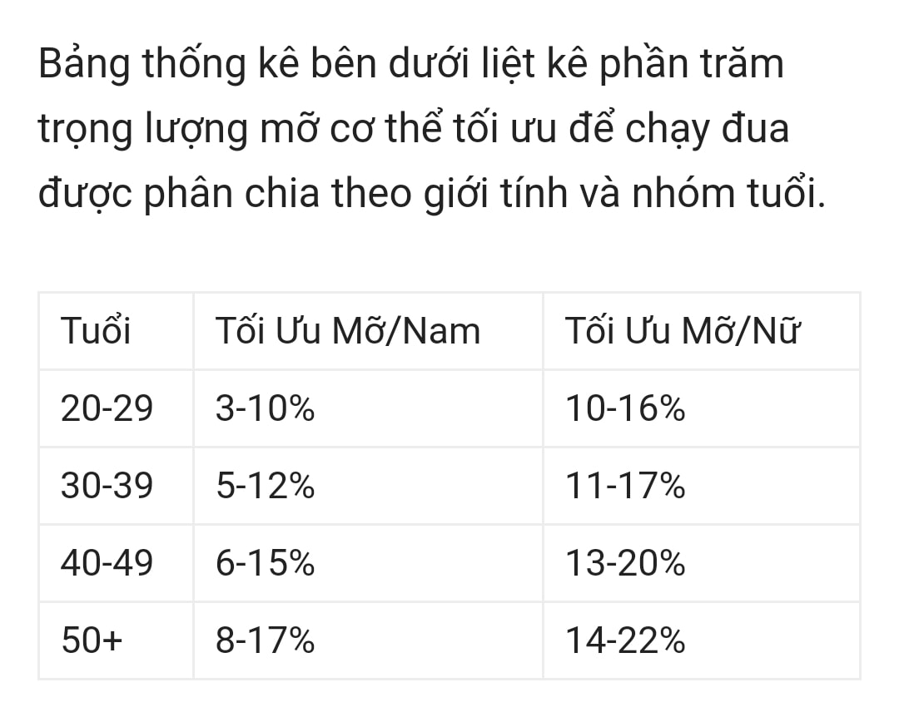
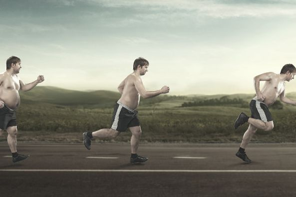

Kiểm tra chỉ số cơ thể
Lôôôôô, a lô, lại là Lãng tôi đây - hế hế 😃
Hôm nay tôi lại mạn phép bàn một chút về trọng lượng cơ thể:
Béo => Đương nhiên chạy chậm
Béo => Đương nhiên dễ gặp chấn thương hơn
Béo => Nói chung là ....nhìn chán 😃Vậy làm sao để biết mình BÉO hay trọng lượng cơ thể như thế nào là lý tưởng, xin mời mn cùng tham khảo bài viết sau:
TRỌNG LƯỢNG CƠ THỂ VÀ CHẠY BỘ
Cơ thể quá nặng có ảnh hưởng đến chạy bộ hay không?
=> Trả lời: CÓ
=> Vì sao: Cơ thể càng nặng thì càng ảnh hưởng đến chạy bộ, do bạn càng phải tốn nhiều năng lượng hơn để chạy 1 pace cố định nào đó
Khảo cứu: Cơ thể cứ tăng 5% trọng lương cơ thể thì thành tích bị giảm đi 5%
Cơ thể quá nhẹ có ảnh hưởng đến chạy bộ hay không?
=> Trả lời: CÓ
=> Vì sao: Cơ thể quá nhẹ so với tiêu chuẩn thì sẽ thiếu dinh dưỡng hoặc không có đủ mỡ cơ thể để hỗ trợ trong việc giải phóng năng lượng khi chạy.
Vậy, trọng lượng như thế nào là chuẩn hay còn gọi là lý tưởng? (Có thể chạy đua)

- Xác định trọng lượng lý tưởng chủ yếu dựa vào lượng mỡ cơ thể. Vậy, xác định lượng mỡ cơ thể như thế nào* ? => Xác định bằng tỷ lệ % trọng lượng mỡ cơ thể.
=> Cách tính: Xác định các chỉ số:
- Giới tính (Gender): Chọn Male (Nam) hoặc Female (Nữ) - Tuổi (Age) - Cân nặng (Weight) - Chiều cao (Height) - Vòng cổ (Neck): Lấy thước dây đo chu vi vòng cổ qua ngang vị trí gồ cao nhất của “Trái khế” ở cổ (Các bác đừng hỏi Khế nằm lộ mô nha) - Vòng bụng (Waist): Lấy thước dây đo ngang mức của rốn (Hay còn gọi là dún) (Cấm…thóp bụng 🤣) Nhập hết các chỉ số có được vào các ô trong link bên dưới rồi bấm Calculate sẽ ra kết quả (Result) cạnh bên [https://www.calculator.net/body-fat-calculator.html](https://www.calculator.net/body-fat-calculator.html) <img src="../images/2023-02-25-ktra-chi-so-4.jpeg" alt="beta reduction" width="50%" height="50%"> Có kết quả đem đối chiếu với bảng thống kê liệt kê phần trăm trọng lượng mỡ cơ thể tối ưu để chạy đua được phân chia theo giới tính và nhóm tuổi (Ảnh đính kèm) VD: Các chỉ số của mình - Giới tính (Gender): Male - Tuổi (Age): 44 - Cân nặng (Weight): 62.5 (Lên cân cmnr. Trước có 61kg. huhuhu) - Chiều cao (Height): 170 - Vòng cổ (Neck): 35 - Vòng bụng (Waist): 83 **=> KẾT QUẢ: 18.6% => Béo như con heo 🐷 roài. huhu**

Kết luận:
- Việc tính được tỷ lệ % mỡ cơ thể tối ưu hay trọng lượng lý tưởng để giúp chúng ta biết được có mục tiêu đưa cơ thể về các chỉ số chuẩn.
- Tuy nhiên các chỉ số lý tưởng này không phải là điều kiện đủ để có thể đạt thành tích tốt khi đi race mà còn phụ thuộc rất nhiều yếu tố khác ví dụ như Dinh dưỡng, dáng chạy, giáo án tập luyện, chế độ nghỉ ngơi, tinh thần, thời tiết….vân vân và mây mây.
- Nhưng nếu đạt được trọng lượng hay lượng mỡ cơ thể lý tưởng thì có lợi ích rất nhiều trong chạy bộ và đi race. Nhất là giảm nguy cơ chấn thương và còn chưa kể sẽ có dáng đẹp nè.
- Còn làm sao có được trọng lượng lý tưởng thì ngoài chạy bộ ra, còn lại các bác…Gúc gồ dùm. Hoặc có thời gian sẽ post cho mọi người tham khảo thêm (À mà thôi, để BS dinh dưỡng họ còn kiếm đồng nuôi con :)))
Chúc các đồng run bon chân và vui vẻ
=> Tổng hợp kiến thức về chạy bộ (Update liên tục)
#HTMT
#HaTinhMarathonTeam
#TyLeMoCoThe